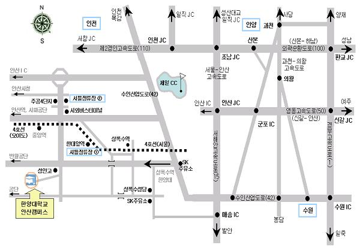

<table width=660 border=0>
<tr>
<td align=center>

<table width=620>
<tr><td>

<p><b><font face="굴림" color="blue"> 교통편</font></b></p>
<h5>※ 오시는 최적경로는 요청하시면 알려드립니다. (도경구 031-400-5667/018-279-5667)</h5>
<h5><font color="#CC0033">[1] <u>수도권 전철 이용시</u></font></h5>
<h5>&nbsp;&nbsp;4호선 오이도(또는 안산)행 전철을 타고 &quot;한대앞&quot;역에서 
하차 → ②번 출구로 나와 한양대학교 셔틀버스 이용 (5분 소요) </h5>
<h5>&nbsp;&nbsp;1호선 수원행을 타고 &quot;금정&quot;역에서 4호선 오이도(또는 
안산)행으로 환승 → &quot;한대앞&quot; 역에서 하차 → ②번 출구로 나와 한양대학교 
셔틀버스 이용</h5>
<h5><font color="#CC0033">[2] <u>승용차 이용시</u></font></h5>
<h5>&nbsp;&nbsp;의왕-과천 고속도로 봉담방면 이용 &quot;안산&quot; 출구(42번 
국도)로 나옴 → 42번 수인산업도로(왕복 8차선)를 10분 정도 오다가 처음 만나는 
삼거리(오른쪽으로 SK 주유소 있음) 신호등에서 좌회전 → 좌회전 후 곧바로 나오는 
삼거리에서 우회전 후 계속 직진 → 2.5km 정도 직진 후 성안고등학교 사거리에서 
좌회전한 후 바로 우회전 → 500m 전방에 한양대 정문</h5>
<h5>&nbsp;&nbsp;신갈-안산 고속도로(영동고속도로) 안산방면 이용 &quot;군포&quot; 
IC로 나와 왼쪽 안산방면으로 1km 정도 직진 → 42번 수인산업도로 인천방면으로 
진입 → 처음 만나는 삼거리(오른쪽으로 SK 주유소 있음) 신호등에서 좌회전 → 좌회전 
후 곧바로 나오는 삼거리에서 우회전 후 계속 직진 → 2.5km 정도 직진 후 성안고등학교 
사거리에서 좌회전한 후 바로 우회전 → 500m 전방에 한양대 정문</h5>
<h5>&nbsp;&nbsp;경부고속도로를 이용할 경우는 신갈 JC에서 신갈-안산 고속도로에 
진입 → 위의 신갈-안산 고속도로 이용 안내 참조</h5>
<h5>&nbsp;&nbsp;서해안 고속도로 이용 &quot;매송&quot; IC로 나옴 → 안산 방면으로 
500m 정도 직진후 사거리(왼쪽으로 SK주유소 있음)에서 시화공단 방향으로 좌회전 
→ 3km 정도 직진한 후 한양대학교 표지판이 보이는 사거리에서 우회전 → 2km 정도 
직진 후 왼쪽으로 성안고등학교가 보이는 삼거리에서 좌회전 → 500m 전방에 한양대 
정문</h5>
<h5>&nbsp;&nbsp;서울-안산 고속도로 이용 서서울 톨게이트 지나 직진하면 당진 방면 
서해안 고속도로로 진입함 → 서해안 고속도로 &quot;매송&quot; IC로 나옴 → 이후에는 
위의 서해안 고속도로 이용시 안내 참조</h5>
<h5><font color="#CC0033">[3] <u>기차 이용시</u></font></h5>
<h5>&nbsp;&nbsp;수원역 하차 → 서울방면 전철 이용 &quot;금정&quot;역에서 4호선 
오이도(또는 안산)행으로 환승 → &quot;한대앞&quot;역에서 하차하여 한양대학교 
셔틀버스 이용</h5>
<h5>&nbsp;&nbsp;수원역 하차 → 수원역 건너편 버스 정류장에서 909번, 707번(좌석)을 
타고 한양대 입구(성안고등학교)에서 하차 (30분 정도 소요) → 한양대 정문까지 
도보 10분</h5>
<h5><font color="#CC0033">[4]</font>&nbsp;<font color="#CC0033">고속버스(시외버스) 
이용시</font></h5>
<h5>&nbsp;&nbsp;안산행 고속버스(시외버스) 이용 안산 시외버스 터미널에서 하차 
→ 주공 4단지 건너편(3단지 앞) 한양대 셔틀버스 승강장에서 학교버스 이용 (10분 
소요)</h5>
<h5>&nbsp;&nbsp;안산 시외버스 터미널에서 택시 이용 (2000원 정도 예상)</h5>
<h5>&nbsp;&nbsp;안산행 고속버스(시외버스)가 없으면 수원행 고속버스 이용하여 
수원 시외버스 터미널 하차 → 수원역까지 도보로 5분 → 수원역에서는 <font color="#CC0033">[3]</font>&nbsp;번 
참조</h5>
<h5><font color="#CC0033">[5] <u>비행기 이용시</u></font></h5>
<h5>&nbsp;&nbsp;김포공항에서 지하철 5호선을 이용하여 &quot;신길&quot;역에서 
1호선(수원 방면)으로 환승 → &quot;금정&quot;역에서 4호선(안산 또는 오이도 방면)으로 
환승 → &quot;한대앞&quot; 역에서 하차, ②번 출구로 나와 한양대학교 셔틀버스 
이용 (공항에서 행사장까지 1시간 30분 내외 소요)</h5>
<h5>&nbsp;&nbsp;김포공항에서 &quot;안산&quot;행 공항 리무진버스를 이용하여 종점인 
안산 시외버스 터미널에 하차 → <font color="#CC0033">[4]</font>&nbsp;번 참조 
(30분간격 운행, 1시간 10분 내외 소요, 요금 6000원정도)</h5>
<p>&nbsp;</p>
<p></p>

  </td></tr></table>

</td></tr></table>
